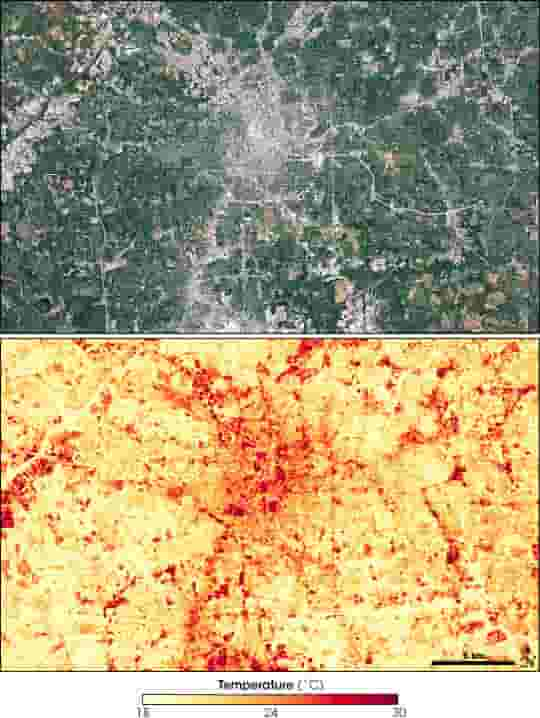

"Energy Excess vs. Energy Essentials:
Cracking the Mega City Energy Conundrum"
Assessing the Energy Appetite of Industrialized Mega Cities
In the quest to understand and address the energy consumption of
industrialized mega cities, we must first consider the crucial question:
how much energy is actually required? While researchers have extensively
studied the minimum energy levels necessary for a decent life, the flip side, often referred to as "energy excess" or "energy decadence," remains relatively unexamined. In an era where energy fuels both human development and environmental degradation, it's vital to reconcile policies aimed at reducing energy demand with those dedicated to poverty alleviation.
For instance, on a per capita basis, North Americans consume more than double the energy of their European counterparts
(6,881 kgoe vs. 3,207 kgoe, measured in kg of oil equivalent). The contrast becomes even starker when we delve deeper into Europe,
where the average Norwegian consumes nearly three times more energy than a typical Greek citizen (5,818 kgoe vs. 2,182 kgoe).
Moving further afield, the difference in energy consumption between the average Angolan (545 kgoe), Cambodian (417 kgoe), or Nicaraguan (609 kgoe)
and the average Bangladeshi (222 kgoe) becomes palpable.
These figures encapsulate not only energy expended directly within households but also encompass energy allocated to transportation,
manufacturing, power generation, and other industrial sectors. This approach, which we can term 'production-based,' provides a more holistic
view because it considers the energy consumed indirectly through purchased products. However, this approach has its shortcomings, as countries with high
per capita energy consumption often import a significant share of goods from countries with lower per capita energy use, leading to an underestimation of
energy use in the more developed nations.
Micro-Level Analysis Reveals Inequity
To gain a comprehensive understanding of energy distribution within countries, higher-resolution data is necessary. For example, a meticulous analysis of variations in household energy consumption, which incorporates electricity and gas, within the UK unveils a fivefold difference in per capita energy use based on geographic location. By considering both inter-country and intra-country variances, alongside the complex web of manufacturing outsourcing, it becomes evident that the world's highest energy consumers can contribute up to 1,000 times the carbon emissions as the lowest energy consumers. Inequality extends beyond mere energy quantity; it encompasses the quality of access as well. Citizens in industrialized nations typically enjoy reliable, clean, and seemingly boundless supplies of electricity and gas. In stark contrast, approximately 3 billion individuals, primarily in the developing world, rely on wood, charcoal, or animal waste for cooking, with 1.5 billion lacking access to electric lighting. These alternative fuels lead to indoor air pollution, arduous collection processes, and unreliable energy sources when modern alternatives are available, albeit often costly and less dependable.
Beyond Energy Poverty: Confronting Energy Decadence
While 'energy poverty' has gained widespread recognition, the converse, 'energy decadence' or 'energy excess,' remains largely overlooked. Initiatives like the United Nations' Sustainable Energy for All (SE4ALL) have aimed to ensure universal access to modern energy services, primarily targeting developing countries. However, we must confront the challenge of addressing those who utilize 'excessive' energy. Attempting to elevate the entire world's living standards and energy consumption to that of affluent countries, which is often perceived as the goal of 'human development,' is incongruous with the environmental crises we currently face.
Global Energy Consequences of Equal Consumption
From the figures presented earlier, it becomes apparent that if every global citizen were to consume energy at the same rate as the average
Western European or North American, the world's total energy use and carbon emissions would skyrocket, likely doubling or even quadrupling
the current levels. This estimation may be conservative, as achieving such living standards in developing nations would necessitate extensive
infrastructure development, which, in itself, consumes substantial energy resources.
Hence, the pursuit of 'energy sufficiency,' characterized by a fair and sustainable level of energy use, must consider not only the 'floor'
(meeting essential needs) but also the 'ceiling' (excessive consumption detrimental to safety and well-being, whether in the short or long term).
Striking a balance within this bandwidth is crucial, as it necessitates not only the reduction of energy usage by the affluent but also the prevention
of disproportionate increases in consumption by the less privileged. However, it remains uncertain whether the maximum levels are inherently higher than the minimum levels.
Challenging Boundaries: Floors and Ceilings
Defining both minimum and maximum levels presents a considerable challenge. From a top-down perspective, establishing a 'safe' level of global
energy usage relies on indicators such as the planet's carrying capacity, which is often linked to limits on carbon emissions aimed at mitigating global warming.
However, there is no global consensus regarding this carrying capacity, be it carbon concentrations in the atmosphere, remaining fossil fuel reserves, ecological damage metrics,
or the potential of renewable energy, increased energy efficiency, and population growth. The bottom-up approach, which focuses on the definition of a 'decent' life, is equally subject to debate.
Addressing Universal Needs and Contextual Variations
The universal applicability of energy consumption standards is far from simple.
\The energy people 'need' is not solely a matter of individual choice but is also contingent on climatic,
cultural, and infrastructural factors. For instance, inhabitants of colder regions necessitate more energy for heating compared to those in warmer climates.
Cultural differences, like the prevalent use of air conditioning in the U.S. versus the siesta culture in Southern Europe, influence energy requirements.
Infrastructure, such as the availability of public transport and cycling facilities, can also steer energy consumption.
Additionally, energy efficiency plays a pivotal role in determining energy needs. A traditional three-stone cooking fire,
for example, is less energy-efficient than a modern gas cooking stove, necessitating more energy for cooking the same meal.
Beyond appliances, the overall efficiency of electricity production and transmission in a region significantly impacts primary energy requirements, even if electricity usage remains constant.
Embracing a Service-Centric Approach
Recognizing the nuanced nature of energy needs, most researchers in the field of energy poverty have shifted their focus from defining a specific energy threshold to assessing 'energy services.' People do not inherently demand energy or fuel; they seek services that energy facilitates. For instance, when it comes to lighting, individuals are concerned not with the quantity of energy consumed but with the sufficiency of light for their specific activities. The NGO Practical Action has introduced the Total Energy Access (TEA) indicator, an innovative approach that measures households in developing nations against predefined minimum service standards for lighting, cooking, water heating, space heating, space and food cooling, and information and communication services. These standards accommodate the fact that various energy services are essential across households, work environments, and community structures.
Basic Needs and Energy: A Dynamic Relationship
Addressing energy consumption through the lens of energy services or basic human needs provides a framework for establishing maximum energy use standards. Rather than mandating fixed minimum service levels (e.g., 300 lumens of light per household), it is conceivable to define maximum energy service levels (e.g., 2,000 lumens of light per household) that align with specific geographic and cultural contexts. Furthermore, some researchers have begun focusing on measuring the conditions of human well-being, shifting the emphasis from defining the precise prerequisites for meeting these needs to assessing the conditions conducive to achieving desired outcomes. Basic needs, classified as universal, objective, non-substitutable, cross-generational, and satiable, are distinct from 'wants,' which are subjective, constantly evolving, individual, substitutable, and insatiable. This categorization allows for the differentiation between 'necessities' and 'luxuries,' affirming that human needs, both current and future, take precedence over desires.
Evolving Energy Needs: The Modern Predicament
The relationship between energy needs and societal standards is anything but static, especially since the 20th century. The relentless escalation in conventions and lifestyle standards has led to a commensurate increase in energy consumption. 'Need satisfiers,' once frugal, have become progressively energy-intensive, a transformation that has muddied the distinction between basic needs and 'wants.' Remarkably, even the so-called 'energy poor' in the industrialized world are found to be living above the planet's carrying capacity. This fact is poignantly evident when considering that if the entire UK population were to adhere to a minimum energy budget determined in consultation with the public, emissions per capita would merely drop from 11.8 to 7.3 tonnes per person. This reduction pales in comparison to the United Nations Development Program's objective of limiting the increase in the world's average temperature to less than two tonnes of carbon per person per year.
Challenging Conventional Notions
To confront energy poverty and energy decadence, a paradigm shift is essential. Encouragingly, advancements in energy efficiency have shown potential.
While 'basic needs' proponents project a decline in the amount of energy required to avoid energy poverty, reality reflects a different trajectory.
Efficiency improvements are often matched by energy-intensive lifestyle changes, hampering genuine energy savings.
However, with the right approach, we can reverse this trend by pursuing greater energy efficiency. The prospect of living with lower energy consumption
is achievable, particularly if we consider 'sufficiency' in tandem with efficiency. This involves reducing energy services (e.g., choosing smaller TVs or more efficient cars)
or replacing energy-intensive practices (e.g., using bicycles instead of cars, selecting fresh over frozen food, or favoring board games over television). Furthermore, communal
services could play a pivotal role in minimizing individual energy requirements, as public service delivery can offer scale economies, reducing the energy needed to provide many
household services.
A study by German researchers exemplifies this potential, showing that a two-person household's electricity usage could be slashed by 75% without resorting to drastic lifestyle
alterations like handwashing clothes or generating power through exercise machines. While this research centers on electricity consumption, it signifies the substantial reduction
in energy requirements attainable through a combination of efficiency and sufficiency measures. If this pattern extends to other energy domains, it opens a promising pathway to
modern living with significantly lower energy demands. At least hypothetically, a 75% energy reduction could bring the households considered here to around 800 kgoe per capita per year,
four times below the European average energy consumption per capita.
In summation, the journey to tackle energy poverty and decadence revolves around redefining our notions of need satisfaction, detaching it from energy-intensive 'need satisfiers,'
and embracing the possibilities of efficiency and sufficiency to redefine what constitutes a modern, sustainable life. This transformation is crucial to alleviate the pressing energy dilemmas of industrialized mega cities and beyond.
 Evening storms frequently strike southern cities in the summer, bringing thunder, lightning, and heavy rain. The confluence of cities and storms may not be a coincidence: more rain falls downwind of some major urban areas than in the surrounding countryside. Satellite measurements and computer models are helping scientists understand why. (Photograph copyright Eugenia y Julian.)
Evening storms frequently strike southern cities in the summer, bringing thunder, lightning, and heavy rain. The confluence of cities and storms may not be a coincidence: more rain falls downwind of some major urban areas than in the surrounding countryside. Satellite measurements and computer models are helping scientists understand why. (Photograph copyright Eugenia y Julian.)
Marshall Shepherd, of the University of Georgia, uses NASA satellites such as the Tropical Rainfall Measuring Mission (TRMM) to study weather and climate. (Photograph courtesy Marshall Shepherd.)
 Summer afternoon thunderstorms are a common occurrence near the Gulf Coast. Humid air rising off the hot ground cools as it ascends. The water vapor in the air condenses, and clouds form. These storms sprang up along the border between Texas and Louisiana on September 6, 2006. (Image and animations by Robert Simmon, based on NOAA GOES super rapid-scan data.)
Summer afternoon thunderstorms are a common occurrence near the Gulf Coast. Humid air rising off the hot ground cools as it ascends. The water vapor in the air condenses, and clouds form. These storms sprang up along the border between Texas and Louisiana on September 6, 2006. (Image and animations by Robert Simmon, based on NOAA GOES super rapid-scan data.)
 Measurements from TRMM revealed elevated rain rates downwind of urban areas in Texas. Marshall Shepherd noticed the pattern in summer rainfall while exploring the interactions between sea breezes and the urban landscape of Houston. The heaviest rain (blue) occurred downwind of Houston. This image is based on TRMM and rain-gauge measurements during July, August, and September from 1998 through 2006. (Map by Robert Simmon and Jesse Allen, based on Global Precipitation Analysis data.)
Measurements from TRMM revealed elevated rain rates downwind of urban areas in Texas. Marshall Shepherd noticed the pattern in summer rainfall while exploring the interactions between sea breezes and the urban landscape of Houston. The heaviest rain (blue) occurred downwind of Houston. This image is based on TRMM and rain-gauge measurements during July, August, and September from 1998 through 2006. (Map by Robert Simmon and Jesse Allen, based on Global Precipitation Analysis data.)

The roofs, concrete, and asphalt of a city absorb heat during mid-day, raising the surface temperature up to 10°C. This pair of satellite images shows Atlanta on September 28, 2000. In the true-color image (top), the urban areas are gray, and wooded suburbs and open fields are green. The map of surface temperature (bottom) shows the urban heat island. Yellow areas are relatively cool, while red areas are hot. (NASA images by Marit Jentoft-Nilsen, based on Landsat-7 data.)
 Like urban pollution, the aerosols in ship exhaust change the properties of clouds. These satellite images show clouds over the North Atlantic streaked with ship tracks. The top image is similar to a digital photo, while the bottom image shows the size of cloud droplets from pink (smallest) to green (largest). Compared to droplets formed from naturally occurring aerosols like dust or sea-salt, droplets formed from pollution aerosols are smaller and more numerous. The ship tracks in the image contain droplets as small as 2 micrometers (millionths of a meter), while the clouds in the “background” have droplets that are closer to 20 micrometers. Urban pollution has a similar effect on clouds. (NASA images by Jacques Descloitres, MODIS Land Rapid Response Team, and Mark Gray, MODIS Atmosphere Science Team.)
Like urban pollution, the aerosols in ship exhaust change the properties of clouds. These satellite images show clouds over the North Atlantic streaked with ship tracks. The top image is similar to a digital photo, while the bottom image shows the size of cloud droplets from pink (smallest) to green (largest). Compared to droplets formed from naturally occurring aerosols like dust or sea-salt, droplets formed from pollution aerosols are smaller and more numerous. The ship tracks in the image contain droplets as small as 2 micrometers (millionths of a meter), while the clouds in the “background” have droplets that are closer to 20 micrometers. Urban pollution has a similar effect on clouds. (NASA images by Jacques Descloitres, MODIS Land Rapid Response Team, and Mark Gray, MODIS Atmosphere Science Team.)
 The Tropical Rainfall Measuring Mission (TRMM) monitors rainfall 40° north and south of the equator, far enough north to examine cities in the southern United States. This map shows TRMM observations of average hourly rainfall rates in August 2006. Highest rainfall rates (greens and blues) occur across the Tropics. (NASA image by Robert Simmon, based on TRMM data.)
The Tropical Rainfall Measuring Mission (TRMM) monitors rainfall 40° north and south of the equator, far enough north to examine cities in the southern United States. This map shows TRMM observations of average hourly rainfall rates in August 2006. Highest rainfall rates (greens and blues) occur across the Tropics. (NASA image by Robert Simmon, based on TRMM data.)
 TRMM’s Precipitation Radar maps rainfall in three dimensions along a narrow path underneath the satellite. The radar scans the storm in both the along-track (in the direction the satellite is moving, upper inset) and cross-track (across the width of the swath, lower inset). Other TRMM sensors provide visible and infrared data on the storm. Shepherd and his colleagues used these data to help understand the influence of cities on rainfall. (NASA image by Robert Simmon, based on TRMM data.)
TRMM’s Precipitation Radar maps rainfall in three dimensions along a narrow path underneath the satellite. The radar scans the storm in both the along-track (in the direction the satellite is moving, upper inset) and cross-track (across the width of the swath, lower inset). Other TRMM sensors provide visible and infrared data on the storm. Shepherd and his colleagues used these data to help understand the influence of cities on rainfall. (NASA image by Robert Simmon, based on TRMM data.)